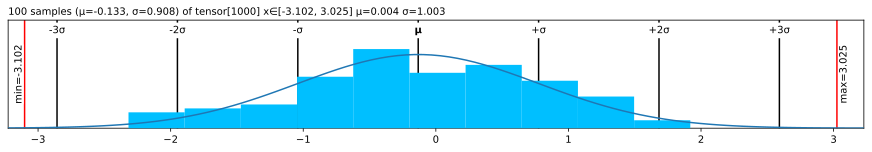

| Type | Default | Details | |
|---|---|---|---|
| precision | int | 3 | Digits after . |
| threshold_max | int | 3 | .abs() larger than 1e3 -> Sci mode |
| threshold_min | int | -4 | .abs() smaller that 1e-4 -> Sci mode |
| sci_mode | NoneType | None | Sci mode (2.3e4). None=auto |
| show_mem_above | int | 1024 | Show memory footprint above this threshold |
| indent | int | 2 | Indent for .deeper() |
| color | bool | True | ANSI colors in text |
| deeper_width | int | 9 | For .deeper, width per level |
| plt_seed | int | 42 | Sampling seed for plot |
| fig_close | bool | True | Close matplotlib Figure |
| fig_show | bool | False | Call plt.show() for .plt, .chans and .rgb |
ü§î Config
Defaults:
set_config
set_config (precision:Union[~Default,int,NoneType]=Ignore, threshold_min:Union[~Default,int,NoneType]=Ignore, threshold_max:Union[~Default,int,NoneType]=Ignore, sci_mode:Union[~Default,bool,NoneType]=Ignore, show_mem_above:Union[~Default,bool,NoneType]=Ignore, indent:Union[~Default,bool,NoneType]=Ignore, color:Union[~Default,bool,NoneType]=Ignore, deeper_width:Union[~Default,int,NoneType]=Ignore, plt_seed:Union[~Default,int,NoneType]=Ignore, fig_close:Union[~Default,bool,NoneType]=Ignore, fig_show:Union[~Default,bool,NoneType]=Ignore)
Set config variables
get_config
get_config ()
Get a copy of config variables
config
config (precision:Union[~Default,int,NoneType]=Ignore, threshold_min:Union[~Default,int,NoneType]=Ignore, threshold_max:Union[~Default,int,NoneType]=Ignore, sci_mode:Union[~Default,bool,NoneType]=Ignore, show_mem_above:Union[~Default,bool,NoneType]=Ignore, indent:Union[~Default,bool,NoneType]=Ignore, color:Union[~Default,bool,NoneType]=Ignore, deeper_width:Union[~Default,int,NoneType]=Ignore, plt_seed:Union[~Default,int,NoneType]=Ignore, fig_close:Union[~Default,bool,NoneType]=Ignore, fig_show:Union[~Default,bool,NoneType]=Ignore)
Context manager for temporarily setting printting options.
Examples
import torch
from lovely_tensors import set_config, get_config, config, monkey_patchmonkey_patch()Precision
set_config(precision=5)
torch.tensor([1., 2, float("nan")])tensor[3] μ=1.50000 σ=0.70711 NaN! [1.00000, 2.00000, nan]
Scientific mode
set_config(sci_mode=True) # Force always on
torch.tensor([1., 2, float("nan")])tensor[3] μ=1.50000e+00 σ=7.07107e-01 NaN! [1.00000e+00, 2.00000e+00, nan]
Color on/off
set_config(color=False) # Force always off
torch.tensor([1., 2, float("nan")])tensor[3] μ=1.50000e+00 σ=7.07107e-01 NaN! [1.00000e+00, 2.00000e+00, nan]test_eq(str(torch.tensor([1., 2, float("nan")])),
'tensor[3] μ=1.50000e+00 σ=7.07107e-01 NaN! [1.00000e+00, 2.00000e+00, nan]')Control .deeper
set_config(deeper_width=3)
image = torch.load("mysteryman.pt")
image[1,100,100] = float('nan')
image.deeper(2)tensor[3, 196, 196] n=115248 (0.4Mb) x∈[-2.11790e+00, 2.64000e+00] μ=-3.88310e-01 σ=1.07319e+00 NaN!
tensor[196, 196] n=38416 x∈[-2.11790e+00, 2.24891e+00] μ=-3.24352e-01 σ=1.03588e+00
tensor[196] x∈[-1.91241e+00, 2.24891e+00] μ=-6.73483e-01 σ=5.21962e-01
tensor[196] x∈[-1.86103e+00, 2.16328e+00] μ=-7.38488e-01 σ=4.18080e-01
tensor[196] x∈[-1.75828e+00, 2.19753e+00] μ=-8.05501e-01 σ=3.96848e-01
...
tensor[196, 196] n=38416 x∈[-1.96569e+00, 2.42857e+00] μ=-2.73903e-01 σ=9.72665e-01 NaN!
tensor[196] x∈[-1.86064e+00, 2.41106e+00] μ=-5.28772e-01 σ=5.55960e-01
tensor[196] x∈[-1.82563e+00, 2.35854e+00] μ=-5.61732e-01 σ=4.72772e-01
tensor[196] x∈[-1.75560e+00, 2.37605e+00] μ=-6.21756e-01 σ=4.58436e-01
...
tensor[196, 196] n=38416 x∈[-1.80444e+00, 2.64000e+00] μ=-5.66673e-01 σ=1.17776e+00
tensor[196] x∈[-1.71730e+00, 2.39599e+00] μ=-9.81537e-01 σ=3.50000e-01
tensor[196] x∈[-1.75216e+00, 2.32627e+00] μ=-1.03418e+00 σ=3.13970e-01
tensor[196] x∈[-1.64758e+00, 2.37856e+00] μ=-1.08647e+00 σ=3.14213e-01
...test_eq(len(str(image.deeper(2))), 1062)In-memory size of data
print(torch.ones((1024, 1024)))
set_config(show_mem_above=torch.inf) # Don't show the memory footprint
print(torch.ones((1024, 1024)))tensor[1024, 1024] n=1048576 (4Mb) x∈[1.00000e+00, 1.00000e+00] μ=1.00000e+00 σ=0.
tensor[1024, 1024] n=1048576 x∈[1.00000e+00, 1.00000e+00] μ=1.00000e+00 σ=0.Reser to defaults
set_config(precision=None, sci_mode=None, color=None, deeper_width=None, show_mem_above=None)
torch.tensor([1., 2, float("nan")])tensor[3] μ=1.500 σ=0.707 NaN! [1.000, 2.000, nan]
test_eq(str(torch.tensor([1., 2, float("nan")])),
'tensor[3] μ=1.500 σ=0.707 \x1b[31mNaN!\x1b[0m [1.000, 2.000, nan]')Context manager
display(torch.tensor([1., 2, torch.nan]))
with config(sci_mode=True, color=False):
display(torch.tensor([1., 2, torch.nan]))
display(torch.tensor([1., 2, torch.nan]))tensor[3] μ=1.500 σ=0.707 NaN! [1.000, 2.000, nan]
tensor[3] μ=1.500e+00 σ=7.071e-01 NaN! [1.000e+00, 2.000e+00, nan]tensor[3] μ=1.500 σ=0.707 NaN! [1.000, 2.000, nan]
Matplotlib and seed
_ = a.plt() # The figure was closed, nothing is displayedset_config(fig_close=False)
_ = a.plt() # figure was not closed. All figures that are not closed are displayed after the cell runs.For performance reasons, .plt will randomly sample up tp max_s elements from the data (10k be default).
You can change the seed used for this sampling (42 by default):
set_config(plt_seed=1)
a.plt(max_s=100)
set_config(plt_seed=2)
a.plt(max_s=100)More details in matplotlib